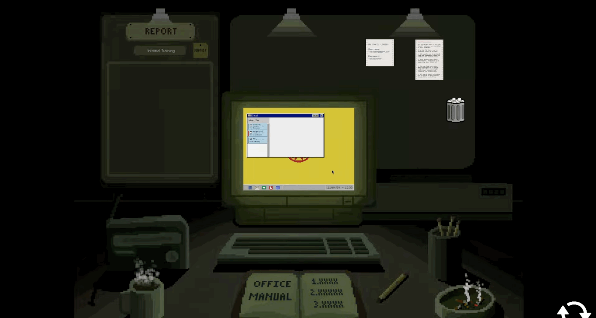
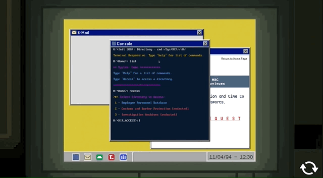
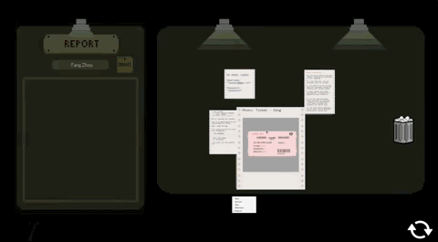
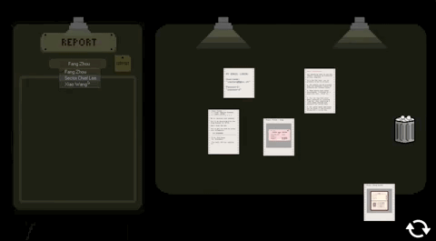
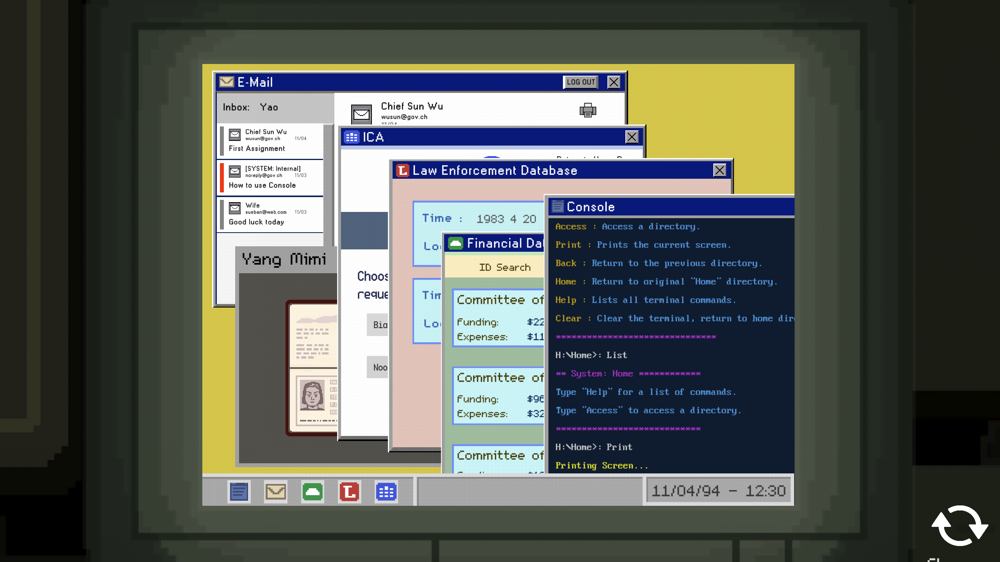
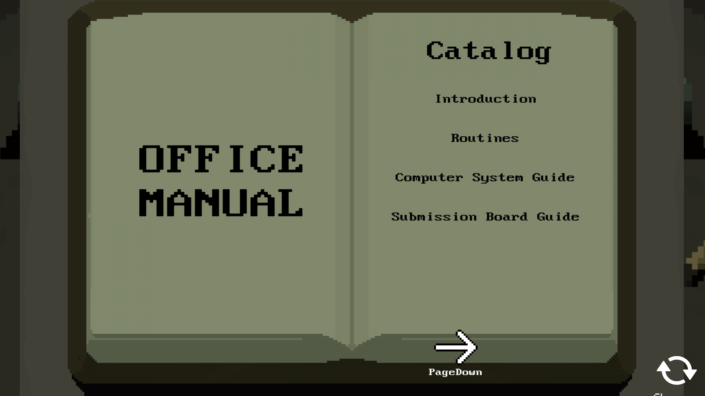
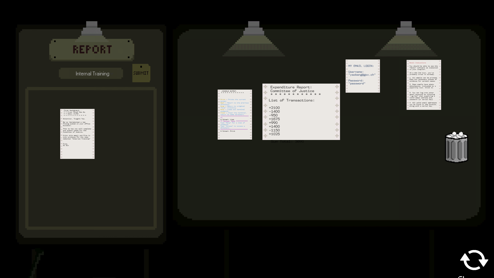
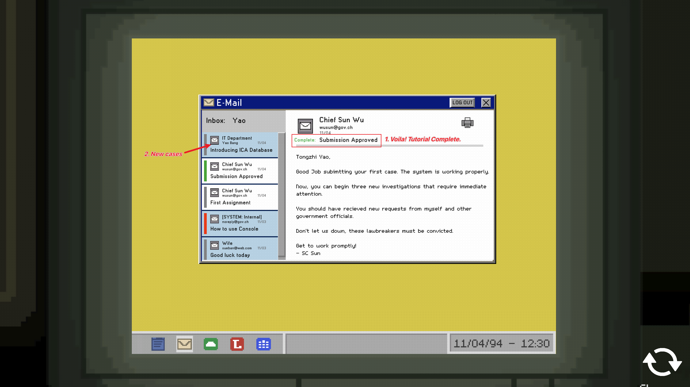
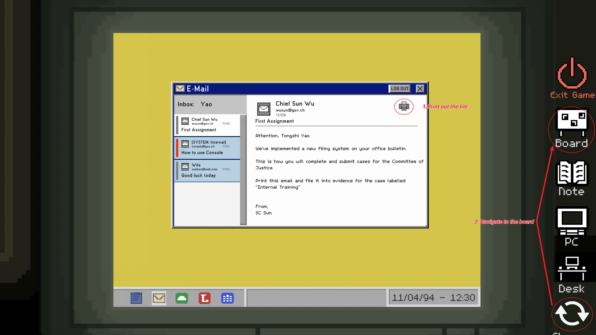
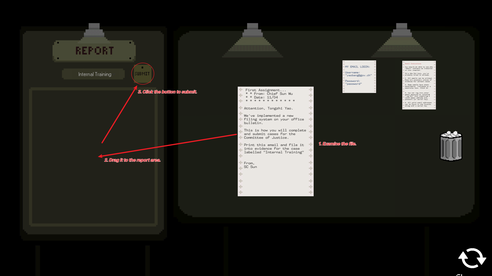

Judge
- Puzzle, Unity
- An interactive puzzle-solving novel set in a fictional dystopian 1980s country, "The New Republic of Chiu."
- Players assume the role of Yao Bang, government investigator for the "Committee of Justice."

Key Features
- Refined version of previous project
- Narrative Enhancement
- In-Game Computer System Redesign
- Real-Time Progression Implementation
Narrative Themes: Dystopian and totalitarian concepts inspired by Orwell's 1984 and Arendt's Eichmann in Jerusalem.
Gameplay Loop

Hack Suspect's Email

Cross-Reference Evidence

Submit Evidence
Desk Interactions

GUI
Computer Interface: Combines a simplified GUI for navigation and a console for email "hacking," added after players struggled with the initial text-based system.

Office Manual
Office Manual: Provides guidance for players needing assistance.

Board
Board: Players can print documents, drag, and analyze them before submission, reinforcing investigative gameplay.
Tutorial Design



Objective: Ensure players understand the core gameplay loop and mechanics in a seamless and diegetic manner.
Player Challenges: Playtests revealed difficulty understanding the investigation workflow. The step-by-step annotated tutorial guides players through examining files, navigating the board, and submitting evidence.